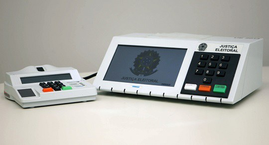

Bem-Vindo

Urna Eletronica
Eleições
A urna eletrônica é um microcomputador de uso específico para eleições, com as seguintes características: resistente, de pequenas dimensões, leve, com autonomia de energia e com recursos de segurança.
Dois terminais compõem a urna eletrônica: o terminal do mesário, onde o eleitor é identificado e autorizado a votar (em alguns modelos de urna, onde é verificada a sua identidade por meio da biometria), e o terminal do eleitor, onde é registrado numericamente o voto.